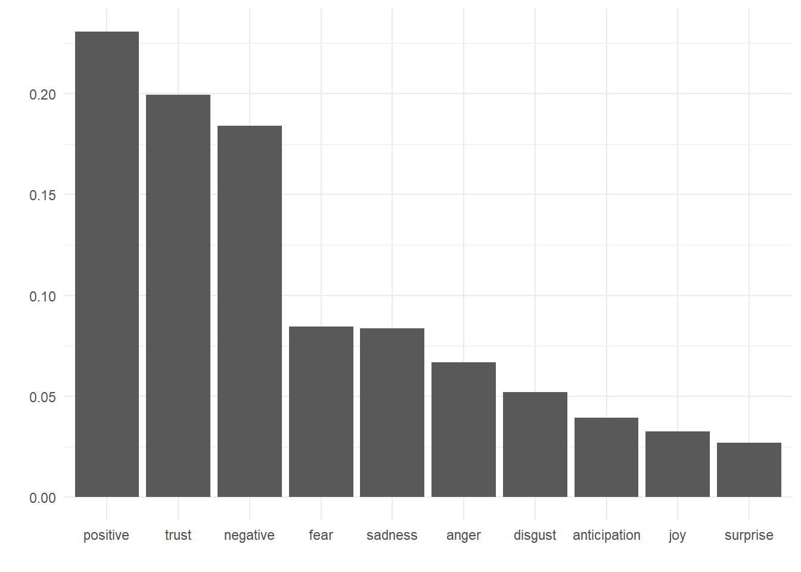
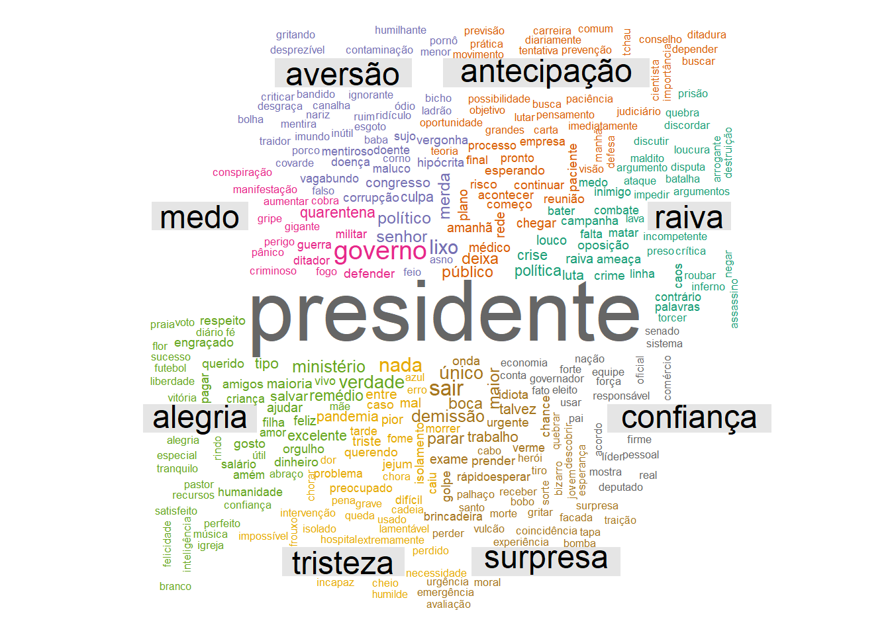

Análise de sentimentos do Twitter
Lucas Borba-Miranda
15 abril, 2020
Introdução
Como o brasileiro reage às respostas dos atores políticos à COVID-19? Compreendemos que, a nível nacional, os principais responsáveis pelo combate à pandemia são o chefe do Executivo e o Ministro da Saúde, este último por ser o responsável pela pasta que lida diretamente com o problema. Para acessarmos a opinião dos indivíduos sobre as medidas que vêm sendo tomadas até então para miminizar os danos causados pelo coronavírus no Brasil, realizamos uma análise de sentimentos de postagens de brasileiros no Twitter. Esta abordagem tem como objetivo mensurar sentimentos e emoções contidas no texto que compõe os tweets com o auxílio de dicionários específicos que classificam palavras e expressões de acordo com a principal emoção a qual está ligada. Assim, podemos ter uma ideia de quais sentimentos (alegria, tristeza, medo, ansiedade, etc.) estão ligados à figura do presidente Jair Bolsonaro e do ministro da saúde, Luiz Henrique Mandetta. Nossos dados são compostos por 942617 tweets baixados no período entre 2020-04-03 01:38:31 a 2020-04-10 00:47:00. Apesar de não ser uma amostra representativa da população brasileira, tendo em vista que o Brasil possui apenas 70% de sua população com acesso à internet1 e apenas 8,28 milhões de usuários no Twitter2, podemos ter uma ideia de como se comporta uma parte da população brasileira em relação aos principais atores políticos que estão - ou deveriam estar - combatendo a pandemia.
Metodologia
Fizemos o download de 942617 tweets no período que vai de 2020-04-03 01:38:31 a 2020-04-10 00:47:00. Foram selecionados apenas tweets que mencionam uma das seguintes palavras: “bolsonaro”, “presidente”, “ministro da saude” ou “mandetta”. A API padrão do Twitter restringe o download dos tweets aos últimos sete dias, o que nos impede de analisar o total de posts desde o início da pandemia da covid-19 no Brasil, que registrou seu primeiro caso no dia 27 de fevereiro. Após os tweets serem coletados, transformamos seu conteúdo num corpus3 e procedemos com a limpeza do texto removendo as stopwords4 e caracteres indevidos contidos nas postagens.
Para a análise de frequência das palavras e hashtags transformamos o corpus em um objeto denominado document feature matrix (DFM), que é formado por um conjunto de \(d\) documentos e \(p\) palavras. A DFM é uma matriz \(D \times P\), onde \(D = \{1, 2, 3, ..., d\}\) e \(P = \{1, 2, 3, ..., p\}\), sendo \(p\) igual ao número de palavras contidas no corpus correspondente ao conjunto de documentos. Cada elemento da matriz corresponde à quantidade de palavras \(p\) contidas no documento \(d\). A partir disso, calculamos a frequência total de cada palavra contida no corpus e elaboramos uma nuvem das palavras mais frequentes.
Resultados
A figura abaixo ilustra as palavras mais frequentes nos tweets entre 2020-04-03 01:38:31 a 2020-04-10 00:47:00. Observamos que os termos de busca (“presidente”, “bolsonaro”, “mandetta”, “ministro” e “saúde”) são as palavras mais frequentes no corpus, por motivos óbvios. Podemos ver próximos ao centro da nuvem palavras como “demissão”, “demitir” e “caneta”, que fazem alusão ao episódio de quase-demissão do ministro da saúde Luiz Henrique Mandetta. Também associados a tal episódio, vemos palavras/expressões como “osmarterra”, e “foramandetta”.
Nuvem de palavras das palavras mais frequentes nos tweets
Quando olhamos para as hashtags mais frequentes nos tweets, podemos observar uma divisão entre as tags a favor de Bolsonaro e de Mandetta. A figura abaixo mostra um diagrama de co-ocorrência entre as 50 hashtags mais frequentes no conjunto de postagens. Observamos do lado direito hashtags que apóiam as ações do ministro da saúde, que são contrárias ao posicionamento do presidente no que se refere ao combate à epidemia, e também palavras que remetem à pandemia propriamente dita. No centro desta nuvem à esquerda, observamos hashtags como #bolsonaroacabou, #ficamandetta e #fiqueemcasa. Essas palavras ocorrem com maior frequência em conjunto a outras tags como #meupresidenteémandetta, #bolsonarogenocida e #impeachmentbolsonaro. Já do lado esquerdo vemos hashtags favoráveis ao presidente, como #foramandetta, #viruschines e #bolsonarotemrazao. Essa tags interagem com maior frequência com outras tags, como #globolixo, #bolsonaro2022 e #naopercamaistempo. Podemos também observar que os dois grupos de hashtags interagem minimamente, uma vez que praticamente não existe ligação entre as tags do lado esquerdo com as do lado direito da figura.
Já o gráfico de barras abaixo ilustra a proporção de palavras contidas nos tweets de acordo com cada tipo de emoção. Observamos que as palavras consideradas positivas são maioria nos tweets dos brasileiros que mencionam os termos de busca utilizados. As emoções mais presentes são confiança e medo. Por último, observamos pequenas manifestações de alegria e surpresa com os tweets publicados quando se referem aos dois principais atores do combate ao coronavírus no Brasil.

Podemos também verificar a incidência de palavras por sentimento. Vemos que palavras como “demissão” e “sair” são as palavras mais frequentes que estão relacionadas ao sentimento de surpresa. As palavras mais frequentes que mensuram raiva são “louco”, “crise” e “política”. “Trabalho”, “ministério” e “remédio” são os termos mais frequentes que estão relacionados a alegria.

Também dividimos os tweets de acordo com o assunto que abordam. A atribuição dos valores para esta variável ocorreu da seguinte forma: se um tweet mencionar a palavra “bolsonaro” ou “presidente”, o assunto deste tweet será classificado como “Bolsonaro”. Caso mencione as palavras “mandetta” ou a expressão “ministro da saúde”, o assunto deste post será classificado como “Mandetta”. Para todos os outros casos, o tweet recebeu a categoria “Both” para a variável assunto. Podemos observar que predominam tweets positivos em relação a Bolsonaro, bem como emoções de confiança. No entanto, devemos ter em mente que aproximadamente 55% das publicações pró-Bolsonaro no Twitter são realizadas por robôs5. No que se refere ao ministro da saúde, observamos uma maior frequência de palavras negativas. Quando comparamos os sentimentos de confiança e medo em relação a Bolsonaro e a Mandetta, podemos verificar que há mais menções de confiança relacionadas ao presidente do que ao ministro. O oposto ocorre em relação ao sentimento de medo: mais palavras que denotam medo estão relacionadas a Mandetta do que a Bolsonaro.
 Na figura abaixo vemos algumas tendências da frequência de palavras positivas e negativas associadas a cada personagem. Verificamos um pico de tweets positivos em relação ao ministro da saúde no dia 6 de abril, data do episódio em que circularam rumores da demissão de Mandetta pelo presidente Bolsonaro. Os horários presentes no eixo x do gráfico estão no horário de Greenwich, portanto, 3 horas a mais do que no horário de Brasília. Também é observado um pico de palavras negativas em relação ao ministro. Se compararmos ambos os gráficos, podemos verificar que se sobressaem as palavras negativas ao ministro em relação às palavras posivitas. Há também uma maior prevalência de palavras negativas dirigidas ao presidente Bolsonaro na data do episódio.
Na figura abaixo vemos algumas tendências da frequência de palavras positivas e negativas associadas a cada personagem. Verificamos um pico de tweets positivos em relação ao ministro da saúde no dia 6 de abril, data do episódio em que circularam rumores da demissão de Mandetta pelo presidente Bolsonaro. Os horários presentes no eixo x do gráfico estão no horário de Greenwich, portanto, 3 horas a mais do que no horário de Brasília. Também é observado um pico de palavras negativas em relação ao ministro. Se compararmos ambos os gráficos, podemos verificar que se sobressaem as palavras negativas ao ministro em relação às palavras posivitas. Há também uma maior prevalência de palavras negativas dirigidas ao presidente Bolsonaro na data do episódio.

O gráfico abaixo denota comparativamente a frequência de sentimentos e emoções atribuídos a cada uma das figuras. Observamos que há uma maior frequência de termos positivos associados ao presidente compatativamente com o ministro da saúde. No que se refere a palavras associadas a sentimentos negativos, observamos uma maior prevalência de tais palavras em tweets que mencionam o ministro da saúde do que em tweets que mencionam Bolsonaro. Cabe mais uma vez lembrar aqui a incidência do número de robôs associados a tweets em apoio ao presidente, como já mencionado nesta página.
Disponível em: https://g1.globo.com/economia/tecnologia/noticia/2019/08/28/uso-da-internet-no-brasil-cresce-e-70percent-da-populacao-esta-conectada.ghtml↩
Disponível em: https://www.tecmundo.com.br/redes-sociais/144654-brasil-10-paises-usuarios-twitter.htm↩
Formato de objeto texto em linguagem natural para implementação de análise quantitativa de texto.↩
palavras consideradas irrelevantes para o conjunto de resultados de uma busca. Ex: de, as, o, para, com, etc.↩
Disponível em: https://valor.globo.com/politica/noticia/2020/04/03/55-de-publicacoes-pro-bolsonaro-sao-feitas-por-robos.ghtml↩